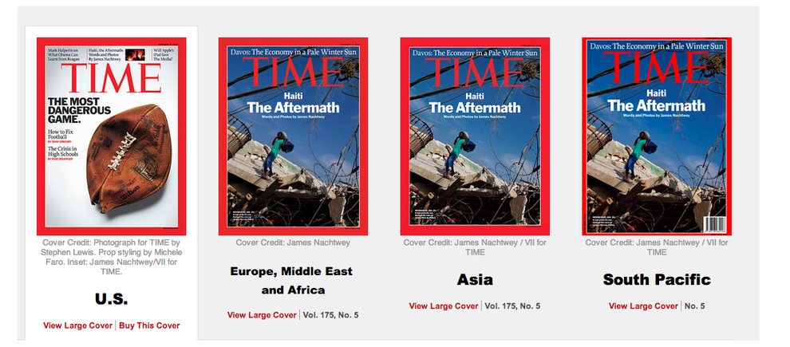

Based on the changing values of the different American generations, how the public responds to national and international tragedies has been polarized.
The twentieth century changed the international relationships of the world unlike any era before it. The World Wars, Cold War, Vietnam War, and the Korean War were evidence that the U.S. had a dramatic change in heart from isolationist views in the early 1900s. The U.S. turned from a fast growing but uninvolved country to the world’s police, fighting for justice, liberty and democracy in every corner of the globe—with or without the will of the people. America’s ever changing values and policies in conjunction the American people’s changing viewpoints have helped form our response to tragedy.
The twentieth century changed the international relationships of the world unlike any era before it. The World Wars, Cold War, Vietnam War, and the Korean War were evidence that the U.S. had a dramatic change in heart from isolationist views in the early 1900s. The U.S. turned from a fast growing but uninvolved country to the world’s police, fighting for justice, liberty and democracy in every corner of the globe—with or without the will of the people. America’s ever changing values and policies in conjunction the American people’s changing viewpoints have helped form our response to tragedy.
|

http://www.buzzfeed.com/ellievhall/19insert-word-here-differences-between-time-magazine-us-and
|
“You can watch something that happens in the United States here, and you know, like the bombings at the marathon last year, and what, four people died [...] or you know there’s other events you can look at, but on any given day you can open a newspaper, or go on the computer, you know and in Iraq or Afghanistan or who knows where it’ll be, 30 or 40 people will die in a bombing every day. You know, and it’s not a national tragedy, it’s just another day.”
|
Eric Mendell thinks that Americans have become disconnected to international events, and it certainly is easy to see why. The way that the American media and public respond to national disaster or tragedy as opposed to international events is vastly different, and it’s something that is unique to the US.
As a nation we’ve become tremendously involved internationally with our foreign policies, and yet in our magazines, news, culture, we are so disconnected to the events discussed. More than that, it appears that we are even purposefully ignorant of the true ramifications of the occurrences highlighted. Even with tragedies such as bombings, natural disasters, and shootings happening in the world every day, a majority of U.S. media and the public are either not aware or do not care about these issues. Yes there is disparity when compared to national calamities, which are featured on the front pages of every news outlet, sometimes for weeks at a time—the polar opposite to the reactions international events receive. Samantha Shieh, a student in the Bay Area, believes that it comes from the amount of protection that the U.S. has from outside influences:
As a nation we’ve become tremendously involved internationally with our foreign policies, and yet in our magazines, news, culture, we are so disconnected to the events discussed. More than that, it appears that we are even purposefully ignorant of the true ramifications of the occurrences highlighted. Even with tragedies such as bombings, natural disasters, and shootings happening in the world every day, a majority of U.S. media and the public are either not aware or do not care about these issues. Yes there is disparity when compared to national calamities, which are featured on the front pages of every news outlet, sometimes for weeks at a time—the polar opposite to the reactions international events receive. Samantha Shieh, a student in the Bay Area, believes that it comes from the amount of protection that the U.S. has from outside influences:
|
“I feel like America has been protected for a long time, like 9/11 was the first attack on U.S. soil [in a long time], but stuff doesn’t really happen here, violent things coming in from other countries doesn’t really happen. So when something does happen, it’s huge because it’s rare.”
|
-- Samantha Shieh
|
Vanessa Archambault also comments on how different people treat victims of disasters in their own countries:

Workers help to rescue those caught in the tsunami of 2011.
|
“People banded together [in Japan] to help each other out and it was just a huge community of people helping each other, and I read this story about all of the elderly people in the area volunteered to go in and do the manual work to try and stabilize the reactor [...] they didn’t want the young people to be affected. [...]
We live in a country where it’s every man for himself, and it really touched me, [and] they organized so well, there weren’t people yelling from rooftops being like: ‘Do it yourself, only think of yourself, lift yourself by your bootstraps, don’t let people leech off of you!’ I feel like in America there’s this narrative that people are lazy, and whenever there is a disaster, people are like: ‘Well what are you going to do, let them deal with it themselves’.”
|
These defining moments for these various generations exemplify the disparity between the national and international news and their respective reactions from Americans, in tandem with their evolving principles.